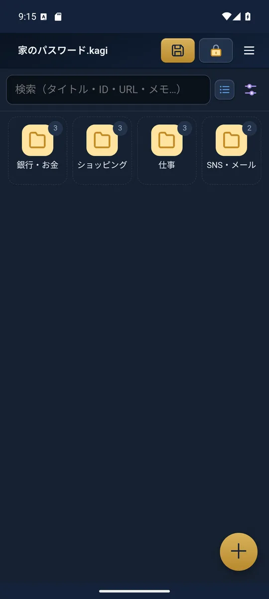
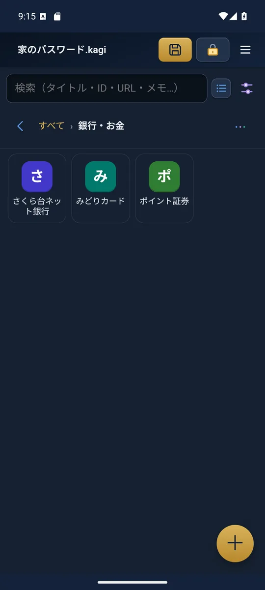
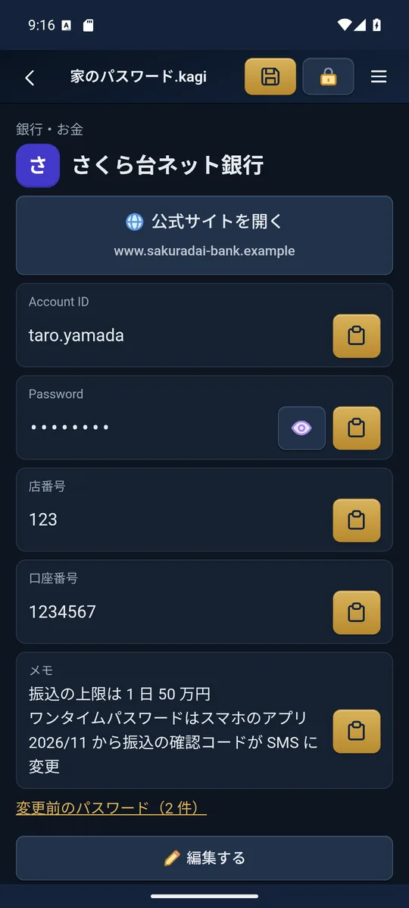
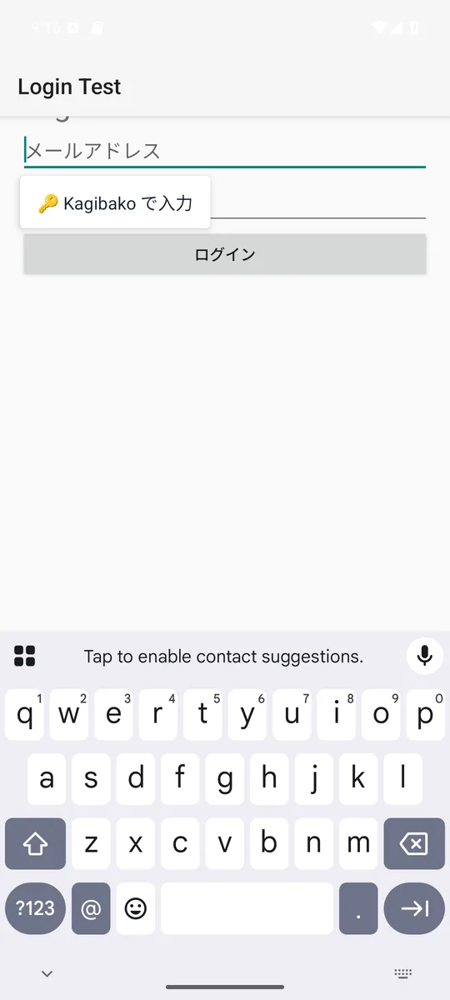
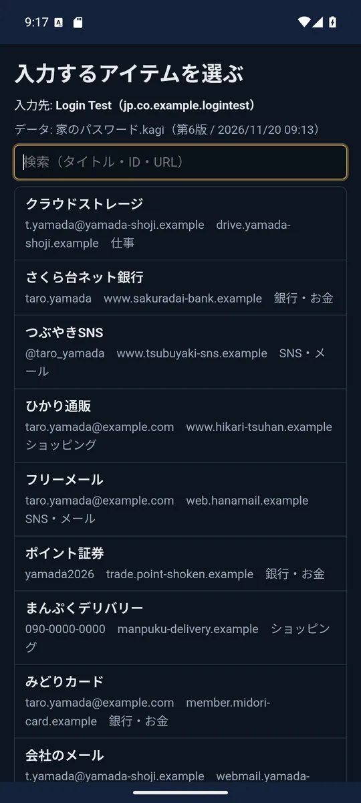
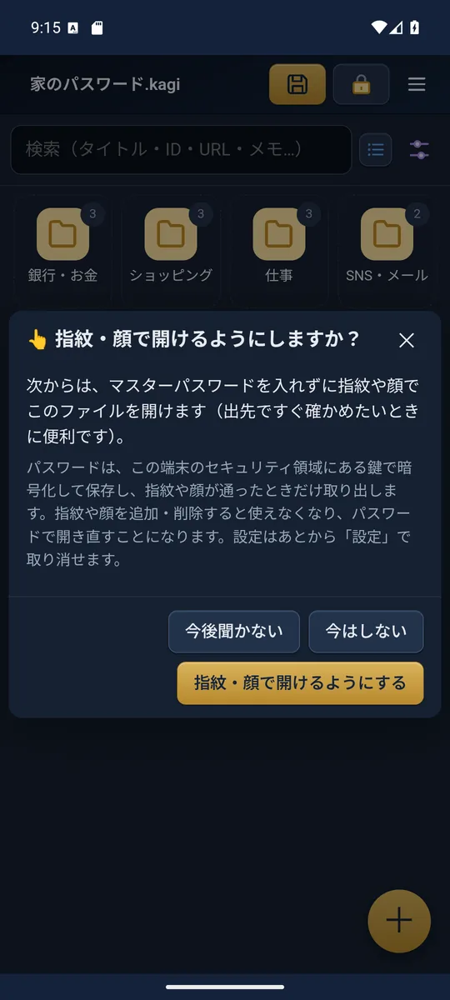
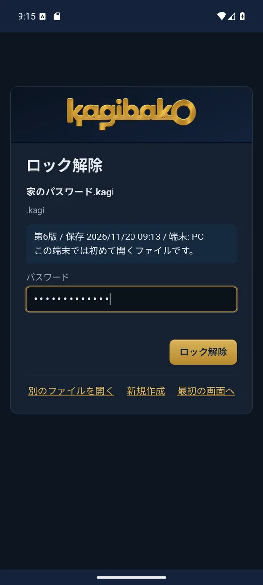
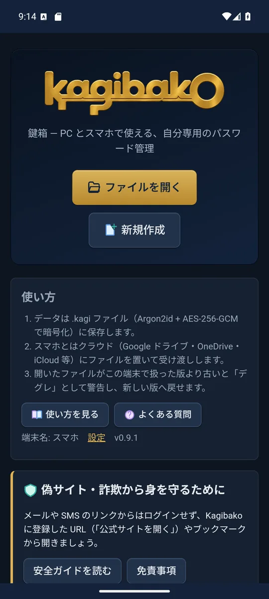

できること
- ほかのアプリにそのまま入力ログイン欄をタップして「Kagibako で入力」を選ぶだけ。ブラウザでも、ほかのアプリでも使えます。
- 偽サイトでは入力しない入力の前に、開いているページのドメインと登録した公式サイトを照らし合わせ、違えば止めます。銀行・カード・通販・行政など、主要なサービスの公式ドメインを最初から入れてあります。
- 指紋・顔ですぐ開けるマスターパスワードを毎回入れなくても、指紋や顔で開けます。
- データは暗号化して手元にパスワードは暗号化したファイルに保存。アプリはインターネットの権限を持たず、データを外へ送れない作りです。
- パソコンとも同じファイルGoogle ドライブなどにファイルを置けば、Windows 版とも同じデータを使えます。古いファイルでの上書きも警告します。
- パスワードの点検と生成使い回しや弱いパスワードを一覧にし、強いパスワードをその場で作れます。
- のぞき見とうっかりを防ぐアプリの画面はスクリーンショットや録画ができず、コピーしたパスワードは自動で消えます。
- ほかのアプリから移せるChrome・Bitwarden・KeePass などの CSV を読み込めます。
画面紹介








※画面の中のサービス名・ID・URL は、説明用に作った架空のものです。
プライバシー
パスワードなどのデータは、暗号化したまま、あなたが選んだ場所にだけ保存されます。作者のサーバーに送られることはなく、アカウント登録もありません。広告・アクセス解析・トラッキングも行いません。
詳しくはプライバシーポリシーをご覧ください。
パソコンでも使えます
Windows 版もあります。ブラウザへの自動入力や、偽サイト対策はパソコンでも使えます。スマホと同じファイルを使えます。